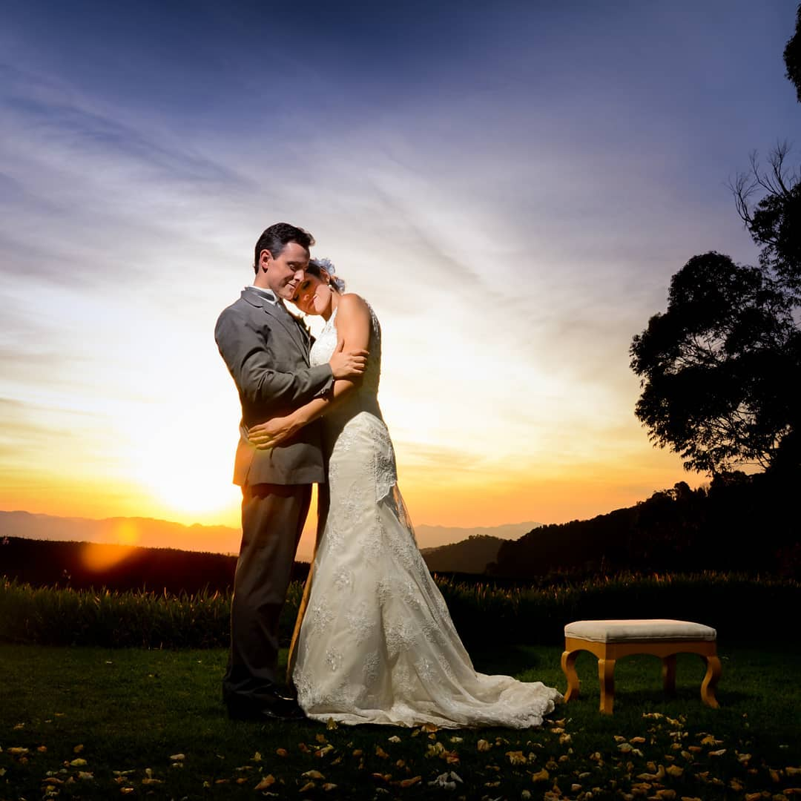
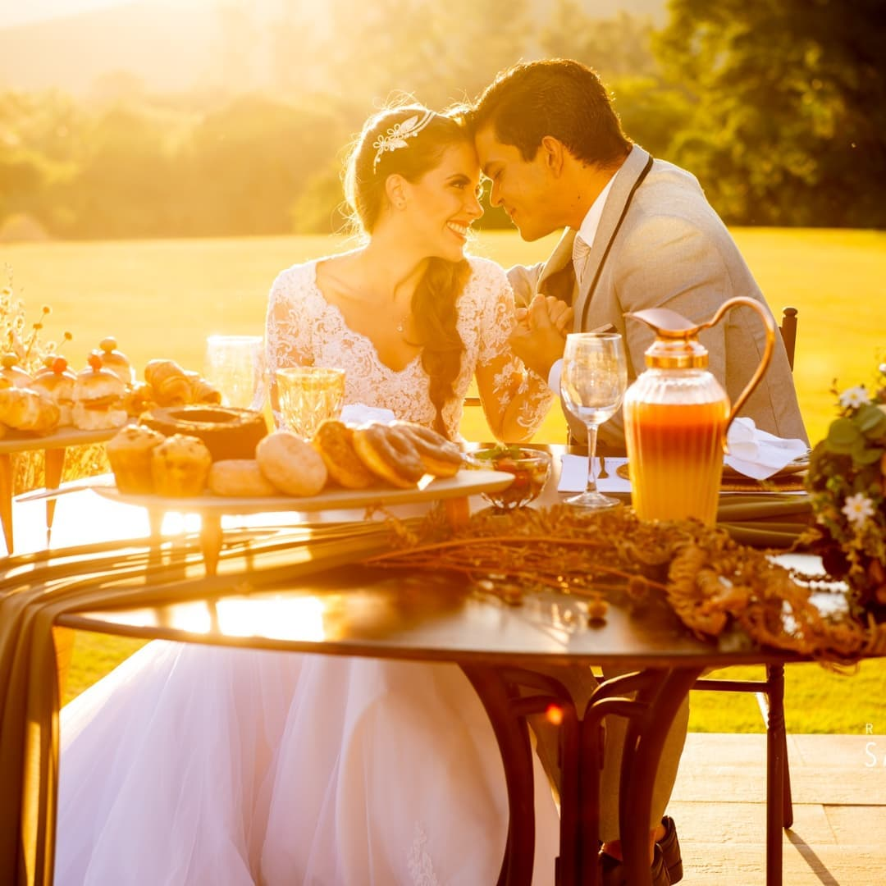
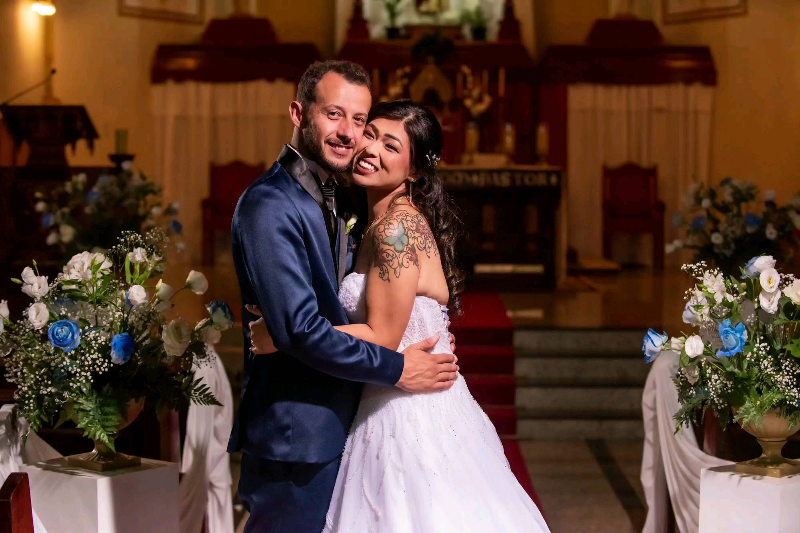
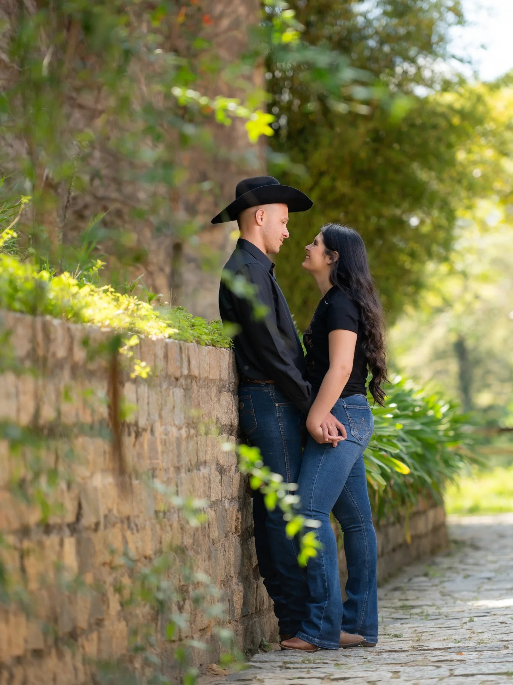
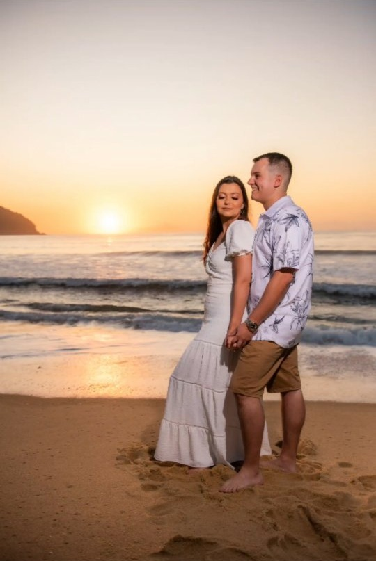
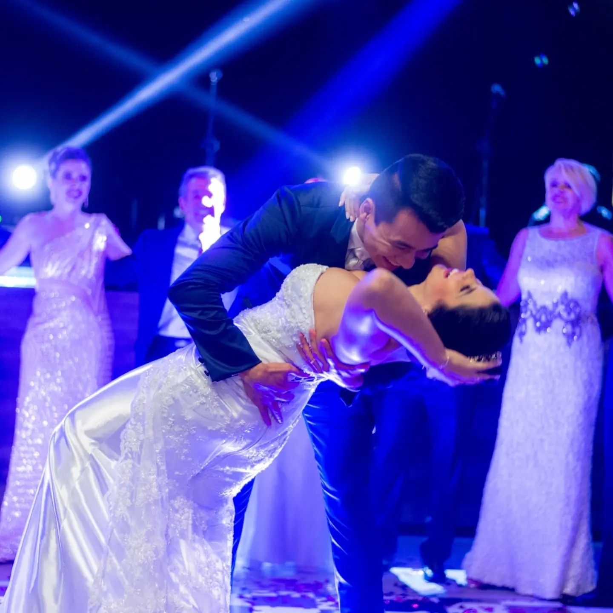

f/1.4
O instante
Casamentos e pré-wedding
O beijo que ninguém viu chegar. A mão do pai. A mesa antes dos convidados.







“É um prazer fotografar pessoas como vocês.” Robson, sobre um casamento em Carvalhos, MG
Como acontece
Antes
Uma conversa para ouvir a história, o lugar e a luz do horário. O ensaio aproxima o casal da câmera.
No dia
Presença discreta, com equipe. Making of, cerimônia e festa, sem interromper nenhum dos três.
Depois
Seleção e tratamento cuidadosos, e o álbum impresso para durar.
Antes de perguntar
Você fotografa fora do Vale?
Sim. Há casamentos e ensaios em Campos do Jordão, no litoral e no sul de Minas.
Vamos ter que posar?
Quase nada. A direção aparece quando ajuda e some quando atrapalha.
Com quanto tempo reservar?
Entre 10 e 12 meses antes é o mais tranquilo para garantir a data.